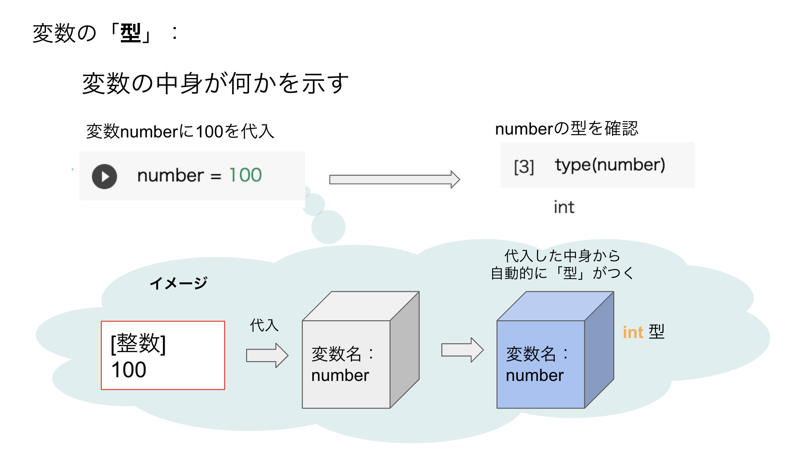
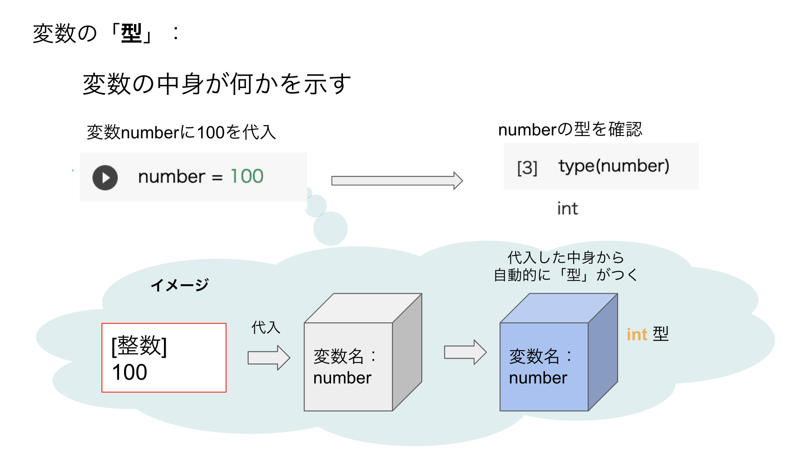

前回は開発環境を整えて、初めての print("Hello, World!") を実行し、またコメントの重要性について学びました。
今回は、プログラミングでデータを扱うための超基本にして超重要な「変数」と「データ型」、そしてそれらを使った簡単な「演算」について学んでいきます。ここをしっかり押さえると、プログラムでできることの幅が一気に広がります。覚えることも多いかもしれませんが、少しずつ慣れていきましょう
int型：整数float型：小数点も扱える数str型：文字や文章bool型：真(True)か偽(False)かtype()関数を使ってみようinput()関数プログラムでは、数値や文字列など、様々な「データ」を扱います。このデータを一時的に保存しておいたり、後で使ったりするために用意するのが「変数」です。
変数とは、データを入れておくための名前付きの箱のようなものだとイメージしてください。箱に名前（これが変数名）をつけて、その中にデータ（これが値）を入れておく感じです。
例えば、テストの点数「80」というデータに「score」という名前の変数を用意したり、自分の名前「山田太郎」というデータに「my_name」という変数を用意したりできます。こうすることで、後から「score」や「my_name」という名前で、中のデータを取り出して使うことができるんです。便利ですよね！
Pythonで変数を作るのはとっても簡単です。基本の形はこれだけ！
変数名 = 値
「=」は算数で使う「等しい」という意味ではなく、プログラミングでは「右側の値を左側の変数に代入する（入れる）」という意味で使われます。これを「代入」と言います。
実際にコードで見てみましょう。
score = 80 # score という名前の変数に、数値の 80 を代入
my_name = "高専太郎" # my_name という名前の変数に、文字列の "高専太郎" を代入
# 変数に入っている値を使ってみる (print関数で表示)
print(score)
print(my_name)
これを実行すると、ターミナルには以下のように表示されるはずです。
80
高専太郎
ちゃんと変数に入れた値が表示されましたね！
変数には好きな名前をつけられますが、いくつかルールと、守った方が良い「お作法」があります。
ルール（守らないとエラーになります）：
a～z, A～Z)、数字 (0～9)、アンダースコア (_) です。1st_score はダメですが、score_1st はOKです。print, if, for など）は変数名として使えません。VSCodeなどのエディタでは予約語が色付きで表示されることが多いので、それで判断できます。score と Score は別の変数として扱われます。お作法（守るとコードが読みやすくなります）：
score や test_point、名前なら name や user_name のように。a とか x とか一文字の変数名は、よほど単純な場合を除いて避けましょう。_ でつなぐ「スネークケース」がよく使われます (例: my_name, student_id)。変数に入れるデータには、実は色々な「種類」があります。これを「データ型」と言います。Pythonはデータ型を自動で判断してくれる賢い言語ですが、代表的なものをいくつか覚えておくと、プログラムを書く上で非常に役立ちます。
今回は、特に重要な3つのデータ型を紹介します。
int型：ピシッと決まる整数int（イント、integerの略）は、整数を表すデータ型です。小数点を含まない数値ですね。
age = 18 # 年齢
count = 100 # 個数
temperature = -5 # 気温 (マイナスもOK)
float型：小数点も扱える数float（フロート、floating-point numberの略）は、浮動小数点数、つまり小数を表すデータ型です。
height = 175.5 # 身長 (cm)
weight = 68.2 # 体重 (kg)
pi_value = 3.14159 # 円周率
ポイント： int と float の違いは、小数点がつくかどうかです。例えば、10 は int ですが、10.0 は float として扱われます。この違いが計算結果に影響することもあるので、意識しておくと良いでしょう。
str型：文字や文章str（エスティーアール、stringの略）は、文字列を表すデータ型です。前回 print() で使ったように、文字や文章はダブルクォーテーション " またはシングルクォーテーション ' で囲みます。
school_name = "明石工業高等専門学校"
message = 'Pythonは楽しい！'
empty_string = "" # 空の文字列も作れます
bool型：真 (True) か偽 (False) かbool（ブール、booleanの略）は、真偽値を表すデータ型です。この型が持つ値は、True (真) と False (偽) の2つだけです。
プログラムが条件に基づいて何かを判断する際に非常に重要な役割を果たします。例えば、「ある条件が正しいか (True)」「間違っているか (False)」といったことを表現できます。
is_student = True # 学生ですか？ -> はい (True)
is_adult = False # 大人ですか？ -> いいえ (False)
has_error = False # エラーはありますか？ -> いいえ (False)
後の回で学ぶ「条件分岐」などで、この bool型がどのように使われるかを見ていきましょう。
type()関数を使ってみよう変数にどんな型のデータが入っているかを確認したいときは、type() という組み込み関数が便利です。
a = 7
b = 2.5
c = "kosen"
print(type(a)) # 変数 a のデータ型を表示
print(type(b)) # 変数 b のデータ型を表示
print(type(c)) # 変数 c のデータ型を表示
これを実行すると、ターミナルには以下のように表示されます。
<class 'int'>
<class 'float'>
<class 'str'>
ちゃんとそれぞれのデータ型が表示されましたね！type() 関数は、デバッグ（プログラムの間違い探し）の時などにも役立つので、覚えておくと便利ですよ。
 

変数とデータ型が分かったところで、次はそれらを使って簡単な計算や操作をしてみましょう。これを「演算」と言い、演算に使われる記号を「演算子」と言います。
int型やfloat型の数値データに対しては、おなじみの算術演算子が使えます。
| 演算子 | 意味 | 例 (a=7, b=2) |
結果 |
|---|---|---|---|
+ |
足し算 | a + b |
9 |
- |
引き算 | a - b |
5 |
* |
掛け算 | a * b |
14 |
/ |
割り算 | a / b |
3.5 (結果は常にfloat) |
// |
割り算 (小数点以下切り捨て) | a // b |
3 |
% |
割り算の余り | a % b |
1 |
** |
べき乗 | a ** b |
49 (7の2乗) |
注意点：
int 同士の / (割り算) の結果は、割り切れる場合でも float 型になります (例: 4 / 2 は 2.0)。0 で割ろうとするとエラー (ZeroDivisionError) になるので注意してくださいね。実際にコードで試してみましょう。
num1 = 10
num2 = 3
print(num1 + num2) # 13
print(num1 / num2) # 3.333...
print(num1 // num2) # 3
print(num1 % num2) # 1
print(num1 ** num2) # 1000
str 型の文字列に対しても、いくつかの演算子が使えます。
+ 演算子 (連結): 文字列同士をくっつけて新しい文字列を作ります。* 演算子 (繰り返し): 文字列を整数回繰り返します。str1 = "Hello"
str2 = "Kosen"
space = " "
# 文字列の連結
greeting = str1 + space + str2 + "!" # "Hello Kosen!" となる
print(greeting)
# 文字列の繰り返し
laugh = "ha" * 3 # "hahaha" となる
print(laugh)
# 数字の文字列と数値は直接連結できないので注意！
# print("出席番号" + 10) # これはエラーになります
# print("出席番号" + str(10)) # こうすればOK (str()で数値を文字列に変換)
ポイント： 数値と文字列を + で直接連結しようとするとエラーになります。もし数値を文字列とくっつけたい場合は、str() という「関数」を使って数値を文字列型に変換してから連結する必要があります。
print("出席番号" + str(10)) # こうすればOK (str()で数値を文字列に変換)
input()関数プログラムが実行中にユーザーから情報を受け取りたい場合があります。そんな時に使うのが input() 関数です。
input() 関数は、ユーザーがキーボードから何かを入力してEnterキーを押すまで待ち、入力された内容を文字列として返します。
print("あなたのお名前を教えてください。")
user_name = input() # ユーザーの入力を待ち、変数 user_name に代入
print("こんにちは、" + user_name + "さん！")
print("好きな数字を入力してください。")
favorite_number_str = input() # この時点では文字列型
# favorite_number = int(favorite_number_str) # もし数値として扱いたい場合は、int()で変換
# print(user_name + "さんの好きな数字に10を足すと、" + str(favorite_number + 10) + "です。")
ポイント：
input() の括弧の中にメッセージ（プロンプトと言います）を入れると、入力待ちの際にそのメッセージが表示されます。例: age_str = input("年齢を入力してください: ")
input() で受け取った値は必ず文字列型になります。もし数値として計算に使いたい場合は、int() や float() を使って適切なデータ型に変換する必要があります。
age_str = input("年齢を入力してください: ")
age = int(age_str) # 文字列を整数に変換
next_year_age = age + 1
print("来年には" + str(next_year_age) + "歳ですね！")
これを怠ると、例えば "18" + 1 のような計算はエラーになってしまいます（文字列と数値を直接足し算できないため）。
さあ、今日学んだことを使って、実際に手を動かしてみましょう！
practice02.py）を作成してください。a に整数 7 を代入b に小数 2.5 を代入c に文字列 "kosen" を代入a + b の計算結果を print() 関数で表示してください。c * 3 の計算結果（文字列が3回繰り返されたもの）を print() 関数で表示してください。print() で表示してみてください。type() 関数で確認してみると面白いですよ！# 変数を定義
a = 7
b = 2.5
c = "kosen"
# a + b の計算と結果の表示
result1 = a + b
print("a + b の結果:", result1)
print("result1のデータ型:", type(result1)) # 結果のデータ型も見てみよう！
# c * 3 の計算と結果の表示
result2 = c * 3
print("c * 3 の結果:", result2)
print("result2のデータ型:", type(result2)) # こちらもデータ型を確認！
第2回はここまでです。変数とデータ型、そして基本的な演算についてやりました。 プログラミングは、こうやって小さな部品（変数や演算子など）を組み合わせて、だんだんと複雑なものを作っていく作業です。一つ一つの部品の役割をしっかり理解することが、大きなシステムの作成には必須です。
次回は、今回少し触れた「文字列 (str型)」について、もっと詳しく掘り下げていきます。文字列を切り取ったり、特定の文字を探したり、色々な操作ができるように
質問や要望などがあれば、いつでも部長のカトに聞いてくださいね。次回も頑張りましょう！